Instructivo de SubliApp
Guía paso a paso para manejar ventas, producción, inventario,
costos y cobros del negocio
Versión local para Windows · No necesita internet
Contenido
- 1¿Qué es SubliApp?
- 2Abrir y cerrar el programa
- 3Conociendo la pantalla
- 4Primeros pasos (orden recomendado)
- 5Configuración del negocio
- 6Tasa del día y bolívares
- 7Inventario de insumos
- 8Productos, recetas y precios
- 9Clientes
- 10Ventas
- 11Abonos y cobros
- 12Recibos en PDF y WhatsApp
- 13Cotizaciones (presupuestos)
- 14Producción
- 15Compras a proveedores
- 16Gastos del negocio
- 17Reportes y Excel
- 18La pantalla de Inicio
- 19Respaldos y seguridad
- 20Rutina diaria y semanal
- 21Preguntas frecuentes
- 22Glosario
1¿Qué es SubliApp?
SubliApp es el sistema de gestión de Zafiro Lab. Reúne en un solo lugar todo lo que antes se llevaba en cuadernos, chats y hojas de cálculo.
Con SubliApp puedes:
| Qué necesitas hacer | Dónde se hace |
|---|---|
| Registrar un pedido y cobrar anticipos | |
| Enviar un presupuesto a un cliente | |
| Saber qué pedidos hay que diseñar, imprimir o entregar | |
| Controlar tazas, franelas, tinta, papel… | |
| Saber cuánto cuesta fabricar cada producto y cuánto se gana | |
| Registrar lo que se compra a proveedores | |
| Anotar alquiler, luz, internet, sueldos… | |
| Ver si el negocio está ganando dinero | |
| Recordar cumpleaños de clientes y quién debe dinero | y |
El programa trabaja con la información que tú cargas: mientras más completo y ordenado lo mantengas, más útil será. Cada venta descuenta sola los materiales del inventario, calcula la ganancia y queda lista para el reporte del mes.
2Abrir y cerrar el programa
Abrir SubliApp
- Haz doble clic en el acceso directo SubliApp del escritorio (o en SubliApp.exe dentro de la carpeta del programa).
- Se abre una ventana negra con el mensaje “SubliApp está funcionando”. Esa ventana es el programa.
- Un segundo después se abre el navegador (Chrome o Edge) con la pantalla de SubliApp. Desde ahí trabajas.
La primera vez en una PC nueva
Windows puede mostrar un aviso azul: “Windows protegió su PC”. Es normal en programas hechos a medida. Haz clic en Más información y luego en Ejecutar de todas formas. Solo ocurre la primera vez.
Cerrar SubliApp
Al terminar el día cierra el navegador y luego la ventana negra. Todo se guarda automáticamente en el momento en que presionas cada botón Guardar: no hay un “guardar” general.
¿No necesita internet?
No. SubliApp funciona completamente en la PC. Internet solo se usa para abrir WhatsApp cuando envías un mensaje a un cliente.
3Conociendo la pantalla
Todas las secciones tienen la misma organización. Si aprendes esta pantalla, sabrás moverte por todo el programa.
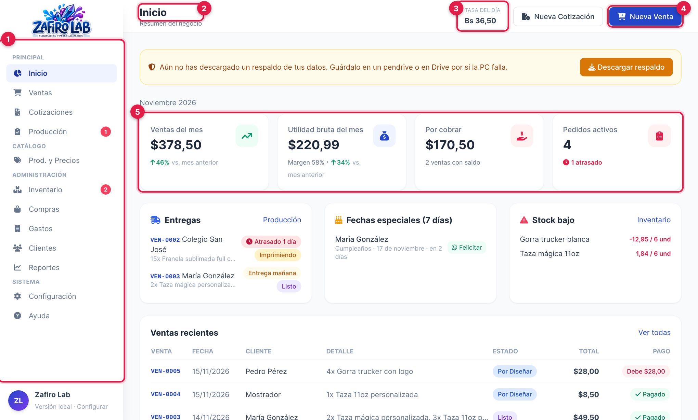
- 1Menú lateral. Haz clic en un nombre para ir a esa sección. Los círculos rojos con número avisan cosas pendientes (pedidos atrasados, insumos por agotarse).
- 2Nombre de la sección en la que estás.
- 3Tasa del día. Muestra cuántos bolívares vale un dólar hoy. Si aparece en amarillo, hay que actualizarla (ver capítulo 6).
- 4Botones de acción. Cambian según la sección: Nueva Venta, Nuevo Insumo, etc.
- 5Contenido de la sección: tarjetas, tablas y listas.
Cosas que funcionan igual en todo el programa
| Elemento | Para qué sirve |
|---|---|
| Buscador 🔍 | Escribe parte de un nombre, folio o producto y la lista se filtra al instante. No importan las mayúsculas ni los acentos. |
| Botones de filtro (por ejemplo “Con saldo”) | Muestran solo una parte de la lista. El que está en azul es el activo. |
| Íconos de cada fila | ✏️ editar · 🗑️ eliminar o anular · 📄 descargar PDF · WhatsApp enviar mensaje. Si pasas el mouse encima aparece su nombre. |
| Formularios (ventanas sobre la pantalla) | Se completan y se confirman con el botón azul de abajo. Para cerrar sin guardar: Cancelar, la X o la tecla Esc. |
| Campos con buscador (cliente, producto, insumo) | Escribe unas letras y elige de la lista con el mouse o con las flechas ↑↓ y Enter. |
| Mensajes en la esquina inferior derecha | Confirman lo que hiciste (verde), avisan algo (amarillo) o explican un error (rojo). Desaparecen solos. |
| Páginas | Las listas largas se dividen de 10 en 10. Usa Anterior y Siguiente al pie de la tabla. |
4Primeros pasos (orden recomendado)
Antes de registrar la primera venta hay que “enseñarle” al programa con qué materiales se trabaja y qué productos se venden. Sigue este orden una sola vez:
- Configuración: revisa el nombre del negocio, RIF, teléfono y sube el logo. Esto aparece en los recibos y presupuestos. (Capítulo 5)
- Tasa del día: carga cuántos bolívares vale el dólar hoy. (Capítulo 6)
- Inventario: registra cada material: tazas en blanco, franelas, gorras, papel, tinta, cinta… con lo que cuesta y cuánto tienes. (Capítulo 7)
- Productos: crea lo que vendes (por ejemplo “Taza personalizada”) e indica qué materiales lleva cada uno. El programa calcula el costo y la ganancia. (Capítulo 8)
- Clientes (opcional): puedes cargarlos ahora o ir creándolos al momento de vender. (Capítulo 9)
5Configuración del negocio
Menú (abajo, en “Sistema”). Aquí se definen los datos que aparecen en los documentos y algunas preferencias.
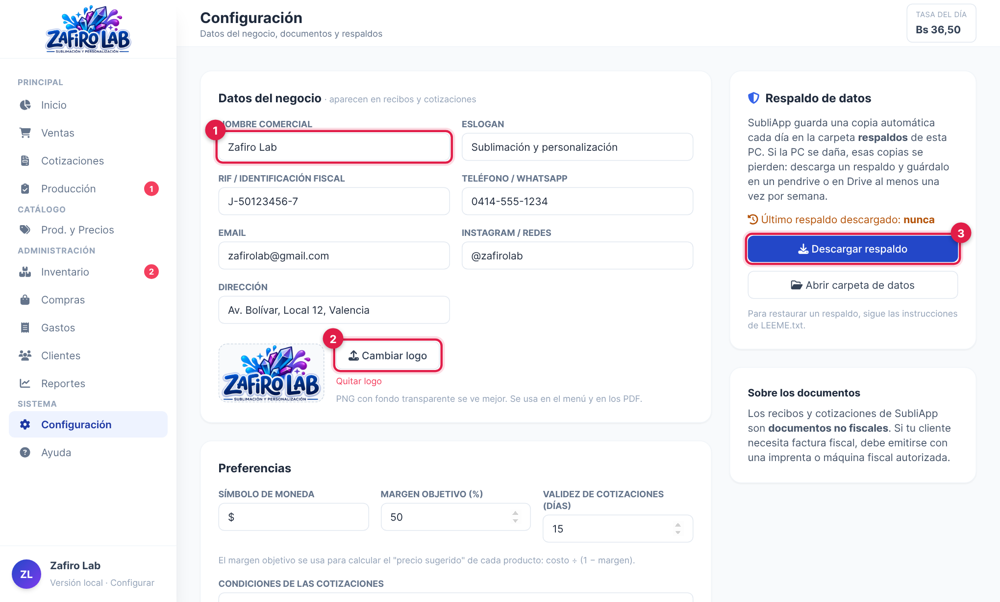
- 1Datos del negocio: nombre comercial, eslogan, RIF, teléfono, email, redes y dirección. Salen en el encabezado de recibos y cotizaciones.
- 2Subir logo: elige la imagen del logo (mejor en PNG con fondo transparente). Aparece en el menú y en los PDF. Se guarda al instante.
- 3Descargar respaldo: guarda una copia de toda la información (ver capítulo 19).
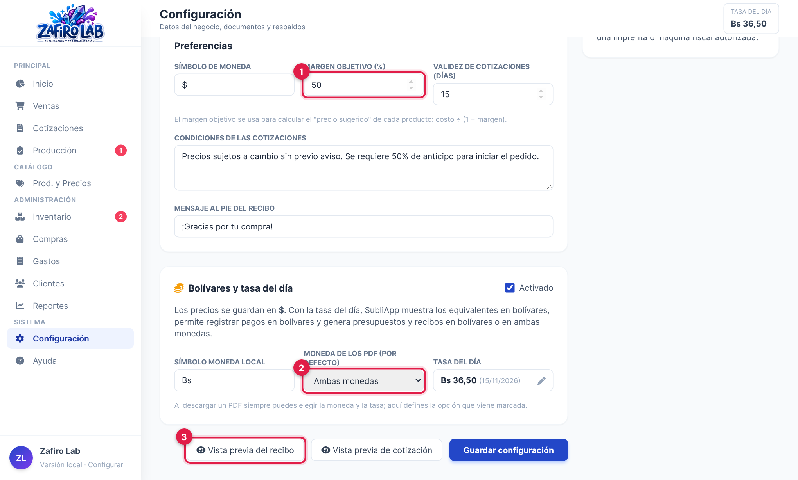
- 1Margen objetivo (%): la ganancia que quieres obtener sobre el precio de venta. Con él SubliApp te sugiere precios (capítulo 8). Un 50% significa que de cada $10 que cobras, $5 son ganancia.
- 2Moneda de los PDF: la opción que viene marcada al generar un recibo o presupuesto (solo $, solo Bs o ambas). Siempre se puede cambiar en el momento.
- 3Vista previa: muestra cómo se ve un recibo o una cotización con tus datos, sin necesidad de crear una venta.
Otras opciones de esta pantalla:
- Símbolo de moneda: normalmente $. Es la moneda en la que se guardan todos los precios.
- Validez de cotizaciones: cuántos días es válido un presupuesto (por defecto 15).
- Condiciones de las cotizaciones: texto que sale al final de cada presupuesto (anticipo, tiempos, etc.).
- Mensaje al pie del recibo: por ejemplo “¡Gracias por tu compra!”.
6Tasa del día y bolívares
En SubliApp todos los precios y costos se guardan en dólares. Así la ganancia no “se mueve” cuando cambia el tipo de cambio. Para cobrar, presupuestar o emitir recibos en bolívares se usa la tasa del día, que cargas tú.
Cargar o actualizar la tasa (todos los días)
- Haz clic en el recuadro de la tasa, arriba a la derecha (si no hay tasa dice Cargar tasa del día; si está desactualizada aparece en amarillo con la palabra “Actualizar tasa”).
- Escribe cuántos bolívares vale 1 dólar hoy (por ejemplo la tasa oficial del BCV): 36.50.
- Presiona Guardar tasa.
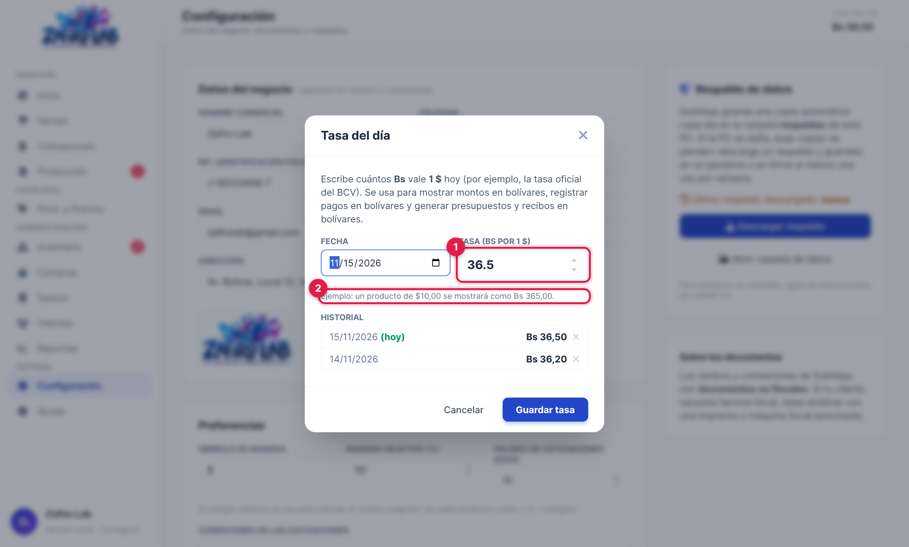
- 1Aquí escribes la tasa. La fecha viene con el día de hoy; puedes cambiarla para cargar una tasa de otro día.
- 2Un ejemplo te confirma que la escribiste bien (cuánto serían $10 en bolívares).
¿Dónde se usan los bolívares?
| Lugar | Qué hace |
|---|---|
| Nueva venta y cotización | Muestran el total equivalente en Bs. Cada venta y cada cotización guarda la tasa usada, así al reimprimirla sale igual. |
| Abonos | Permiten registrar que el cliente pagó en bolívares (por ejemplo, pago móvil). El programa lo convierte a dólares con la tasa. |
| Recibos y cotizaciones en PDF | Puedes generarlos en dólares, en bolívares o en ambas monedas, indicando la tasa. |
| Mensajes de WhatsApp | Incluyen el saldo en bolívares a la tasa del día. |
7Inventario de insumos
Menú . Aquí están todos los materiales con los que se fabrican los productos. A los materiales los llamamos insumos.
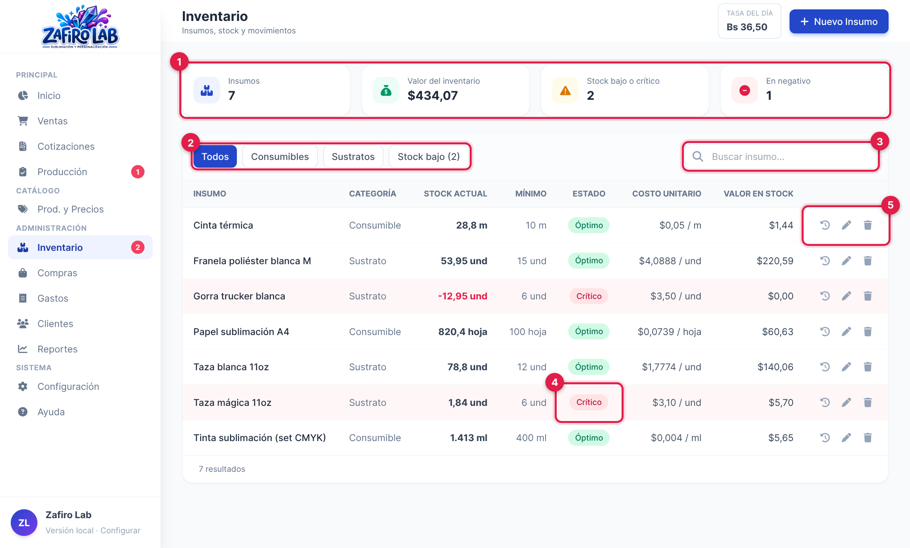
- 1Resumen: cuántos insumos hay, cuánto dinero hay invertido en inventario y cuántos están bajos o en negativo.
- 2Filtros: ver todos, solo consumibles, solo sustratos o solo los que tienen stock bajo.
- 3Buscador por nombre.
- 4Estado del stock: Óptimo hay suficiente · llegó al mínimo · Crítico queda la mitad del mínimo o menos. Las filas críticas se resaltan en rojo.
- 5Acciones: 🕓 historial y mermas (kárdex) · ✏️ editar · 🗑️ eliminar.
Registrar un insumo nuevo
- Presiona Nuevo Insumo.
- Completa el formulario (ver explicación de cada campo abajo).
- Presiona Guardar.
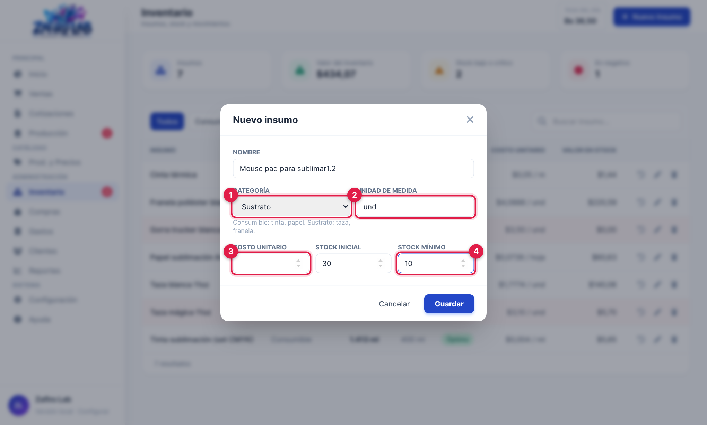
- 1Categoría: Sustrato es el objeto que se personaliza (taza, franela, gorra, mouse pad). Consumible es lo que se gasta en el proceso (tinta, papel, cinta).
- 2Unidad de medida: cómo lo cuentas: und (unidades), ml (mililitros), hoja, m (metros)…
- 3Costo unitario: cuánto te cuesta una unidad, en dólares. Si un paquete de 100 hojas cuesta $8, el costo por hoja es 0.08. Si un frasco de 1.000 ml de tinta cuesta $4, el costo por ml es 0.004.
- 4Stock mínimo: cuando el inventario llegue a esta cantidad, SubliApp te avisará que hay que comprar.
Kárdex: el historial de cada insumo
El botón 🕓 de cada insumo abre su kárdex: la lista de todo lo que entró y salió, con fecha y motivo. Así siempre sabes por qué cambió el stock.
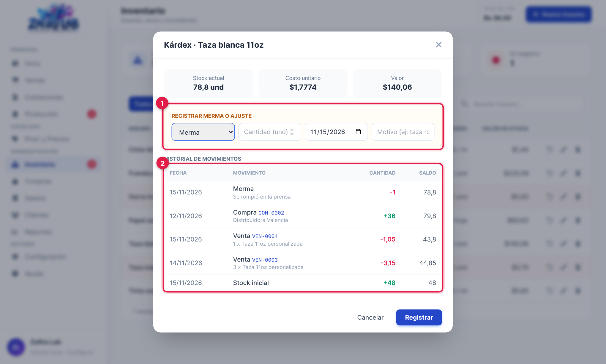
- 1Registrar merma o ajuste: usa Merma cuando algo se daña o se pierde (una taza rota, una franela manchada). Usa Ajuste (+) o Ajuste (−) cuando, al contar, encuentras más o menos de lo que dice el sistema. Escribe la cantidad, el motivo y presiona Registrar.
- 2Historial: en verde lo que entró (compras, ajustes positivos) y en rojo lo que salió (ventas con su número VEN-, mermas). La columna “Saldo” es cuánto quedó después de cada movimiento.
Eliminar un insumo: solo es posible si ningún producto lo usa en su receta. Si lo intentas, el programa te dirá en qué productos está para que lo quites primero.
8Productos, recetas y precios
Menú . Aquí está el catálogo de lo que vendes. Cada producto tiene una receta: la lista de insumos que se usan para fabricar una unidad.
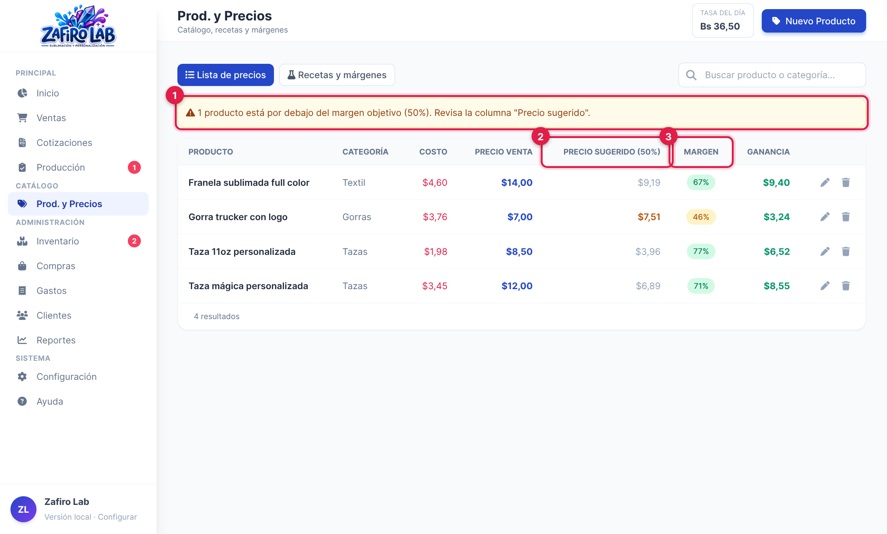
- 1Aviso de margen: te indica si algún producto deja menos ganancia que tu margen objetivo.
- 2Precio sugerido: el precio al que deberías vender para lograr tu margen objetivo. Si tu precio está por debajo, aparece en color ámbar.
- 3Margen: verde cumple tu objetivo · está por debajo · rojo se pierde dinero.
Con el botón “Recetas y márgenes” ves cada producto como una tarjeta con el detalle de su receta y lo que cuesta cada insumo.
Crear un producto con su receta
- Presiona Nuevo Producto.
- Escribe el nombre (ej. “Taza 11oz personalizada”) y la categoría (ej. “Tazas”).
- Presiona “+ Añadir insumo” por cada material que lleva una unidad del producto: busca el insumo escribiendo su nombre, indica la cantidad y, si quieres, el % de merma.
- Escribe el precio de venta o presiona “Usar” para tomar el precio sugerido.
- Revisa el costo y el margen que se calculan solos y presiona Guardar.
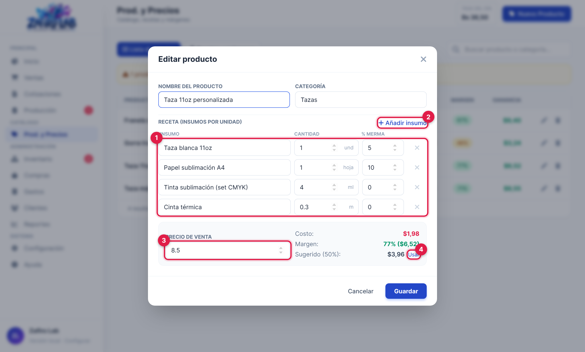
- 1Receta: insumo, cantidad por unidad (la unidad de medida aparece al lado) y % de merma.
- 2Añadir insumo a la receta.
- 3Precio de venta. A la derecha ves en vivo el costo, el margen y el precio sugerido.
- 4Usar: copia el precio sugerido al campo de precio.
9Clientes
Menú . El directorio de clientes con su historial de compras y lo que deben.
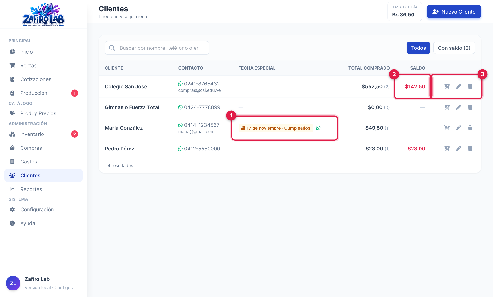
- 1Fecha especial (cumpleaños, aniversario). El botón de WhatsApp abre un mensaje de felicitación ya escrito.
- 2Saldo: cuánto debe el cliente en total. El filtro “Con saldo” muestra solo los que deben.
- 3Acciones: 🛒 nueva venta para ese cliente · ✏️ editar · 🗑️ eliminar.
Haz clic en el nombre de un cliente para ver su ficha: datos de contacto, total comprado, saldo e historial de todos sus pedidos.
Registrar un cliente
- Presiona Nuevo Cliente.
- Escribe nombre o empresa, WhatsApp, email (opcional) y, si la conoces, una fecha especial con su tipo (cumpleaños, aniversario…).
- En Notas puedes anotar preferencias: talla, colores, cómo los conociste…
- Presiona Guardar.
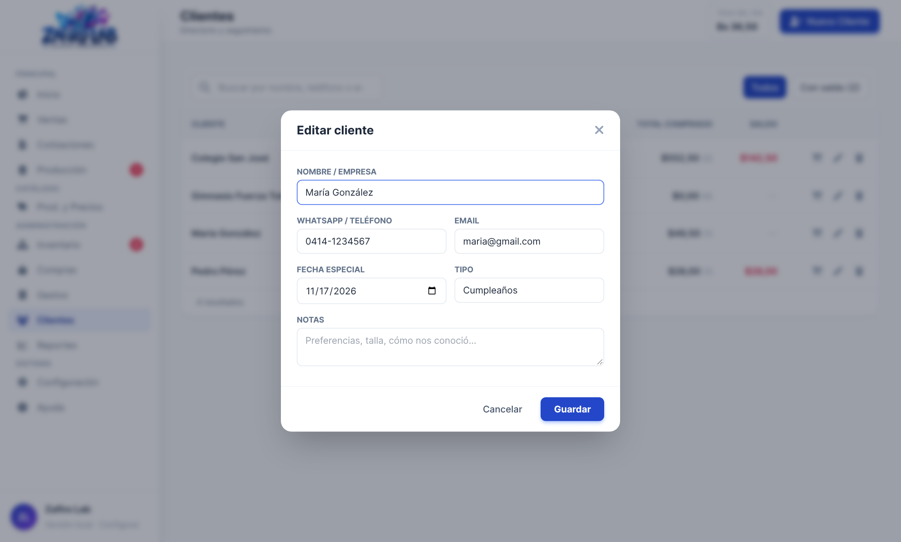
Eliminar un cliente solo es posible si no tiene ventas, para no perder el historial.
10Ventas
Menú . Cada pedido confirmado se registra aquí. Al guardarlo, SubliApp descuenta los insumos del inventario, guarda el costo y la ganancia, y el pedido aparece en Producción.
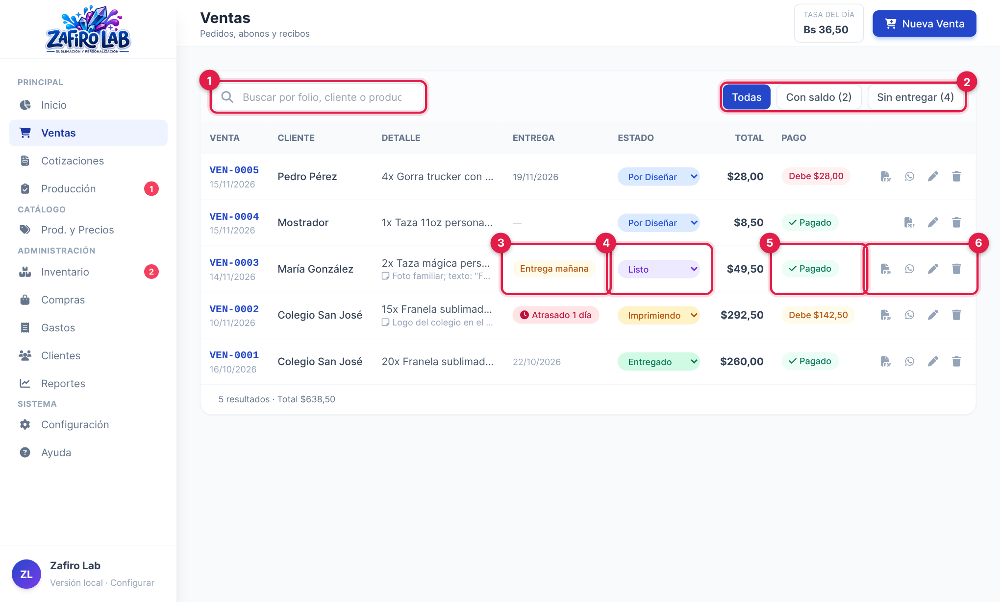
- 1Buscador: por número de venta (VEN-0005), cliente, producto o notas.
- 2Filtros: todas · con saldo pendiente · sin entregar.
- 3Entrega: Atrasado ya pasó la fecha · / · o la fecha comprometida.
- 4Estado de producción: puedes cambiarlo directamente desde esta lista.
- 5Pago: ✓ Pagado o Debe $…. Haz clic para ver y registrar abonos.
- 6Acciones: 📄 recibo PDF · WhatsApp · ✏️ editar · 🗑️ anular.
Registrar una venta nueva, paso a paso
- Presiona Nueva Venta (está en Ventas, Producción e Inicio).
- Cliente: escribe unas letras del nombre y elígelo. Si es nuevo, elige “+ Crear cliente «nombre»”. Si es una venta rápida sin datos, elige “Mostrador”.
- Productos: en la primera línea busca el producto, ajusta la cantidad y, si hiciste un precio especial, el precio. Para más productos presiona “+ Añadir producto”. La ✕ quita una línea.
- Fecha de entrega (recomendado): el día comprometido con el cliente. Con ella el programa te avisa de los pedidos atrasados.
- Notas del pedido: todo lo que el taller debe saber: colores, tallas, textos, fotos…
- Abono inicial (si el cliente dejó anticipo): elige si pagó en $ o en Bs, escribe el monto (o usa los botones 50% / Total) y el método de pago.
- Revisa el total (y su equivalente en Bs) y presiona Registrar venta.
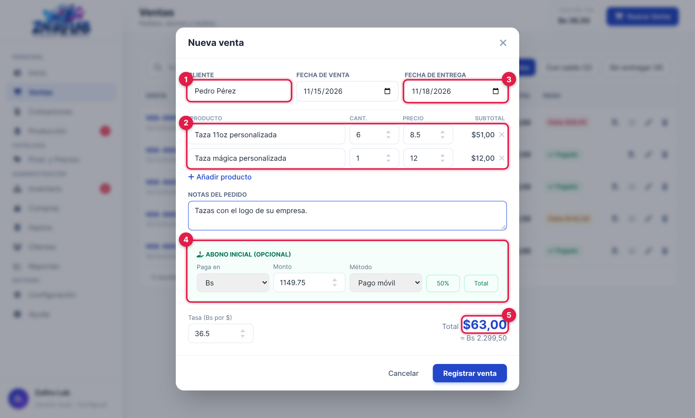
- 1Cliente (con buscador).
- 2Productos, cantidades y precios.
- 3Fecha de entrega comprometida.
- 4Abono inicial: moneda, monto, método de pago.
- 5Total en $ y su equivalente en Bs; a la izquierda, la tasa que se guardará con la venta.
Editar una venta
Con ✏️ puedes cambiar cliente, fechas, productos, cantidades o precios. El inventario se corrige solo: devuelve lo que la venta había descontado y descuenta lo nuevo.
Anular una venta
Con 🗑️ se anula la venta: los insumos vuelven al inventario y se eliminan sus abonos. Úsalo solo si el pedido se canceló o se registró por error; no se puede deshacer.
11Abonos y cobros
Un abono es cada pago que hace el cliente: el anticipo y los pagos siguientes. SubliApp lleva la cuenta del saldo pendiente de cada venta.
Registrar un abono
- En , haz clic en la etiqueta Debe $… de la venta (también desde Producción, Clientes o Inicio).
- Revisa el total, lo abonado y el saldo (con su equivalente en Bs).
- En “Registrar abono” elige la fecha, si paga en $ o en Bs, el monto (viene lleno con el saldo completo) y el método de pago. En la nota puedes poner el número de referencia.
- Presiona Registrar abono.
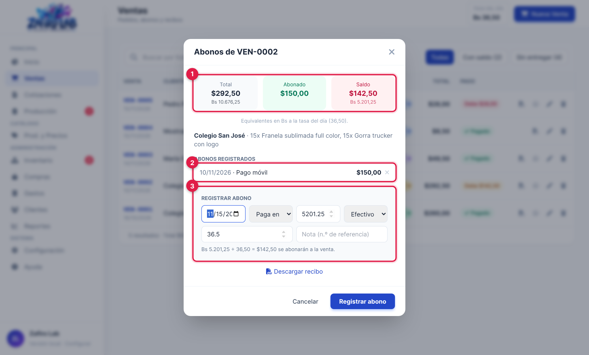
- 1Resumen: total, abonado y saldo, con su valor en Bs a la tasa del día.
- 2Abonos registrados. Los pagos en Bs muestran lo que entregó el cliente y la tasa usada. La ✕ elimina un abono cargado por error.
- 3Registrar abono. Si paga en Bs, aparece la tasa y debajo la conversión: “Bs 620,50 ÷ 36,50 = $17,00 se abonarán”.
Cuando el saldo llega a cero, la venta muestra ✓ Pagado y el recibo sale con el sello PAGADO.
12Recibos en PDF y WhatsApp
Descargar un recibo
- En , presiona el ícono 📄 de la venta (o “Descargar recibo” en la ventana de abonos).
- Elige la moneda del documento y revisa la tasa (puedes usar la de la venta, la del día o escribir otra).
- Presiona Generar PDF. El archivo se guarda en la carpeta Descargas con un nombre como Recibo_VEN-0002_Colegio_San_Jose.pdf.
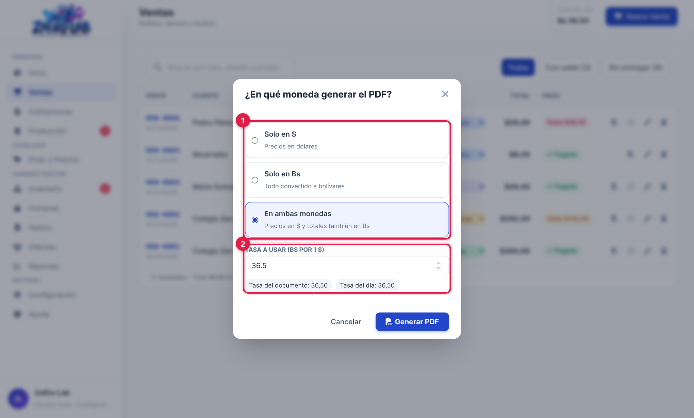
- 1Solo en $ · Solo en Bs (todos los precios convertidos) · Ambas (precios en $ y totales también en Bs).
- 2Tasa: los botones de abajo copian la tasa guardada en la venta o la tasa del día.
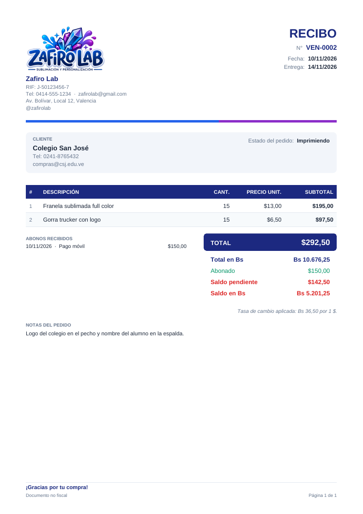
El recibo incluye:
- Logo y datos del negocio (de Configuración).
- Número de venta, fecha y fecha de entrega.
- Datos del cliente y estado del pedido.
- Detalle de productos, cantidades y precios.
- Total, abonos recibidos (con método y tasa) y saldo pendiente.
- Si está pagado, el sello PAGADO.
- Las notas del pedido y la tasa usada.
Avisar al cliente por WhatsApp
El ícono de WhatsApp (en Ventas y en las tarjetas de Producción) abre WhatsApp con un mensaje ya escrito según el estado del pedido. Incluye el detalle, el total, lo abonado y el saldo, también en bolívares. Ejemplo cuando el pedido está Listo:
Hola María, ¡tu pedido #VEN-0003 (2x Taza mágica personalizada, 3x Taza 11oz personalizada) está listo para retirar!
Total: $49,50
Zafiro Lab
Solo tienes que revisar el mensaje y presionar enviar en WhatsApp. Si quieres, adjunta también el PDF del recibo.
13Cotizaciones (presupuestos)
Menú . Para cuando un cliente pide precio antes de confirmar. Las cotizaciones no descuentan inventario; cuando el cliente acepta, se convierten en venta con un clic.
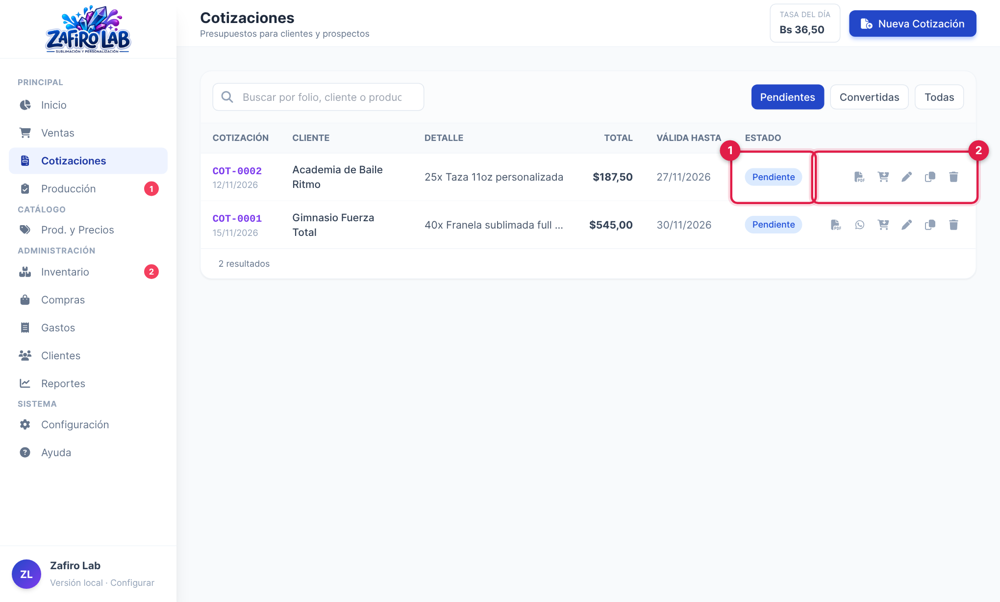
- 1Estado: Pendiente · · Vencida · ✓ Venta VEN-… (ya se convirtió).
- 2Acciones: 📄 PDF · WhatsApp · 🛒 convertir en venta · ✏️ editar · ⧉ duplicar · 🗑️ eliminar.
Crear una cotización
- Presiona Nueva Cotización.
- Cliente o prospecto: búscalo en la lista o simplemente escribe el nombre de una persona que aún no es cliente.
- Agrega las líneas. Puedes elegir un producto del catálogo o escribir cualquier descripción (por ejemplo un diseño especial o un servicio) con su precio.
- Revisa la validez (días) y la tasa; agrega notas para el cliente si hace falta.
- Presiona Guardar y descargar PDF, elige la moneda y se descarga el presupuesto.
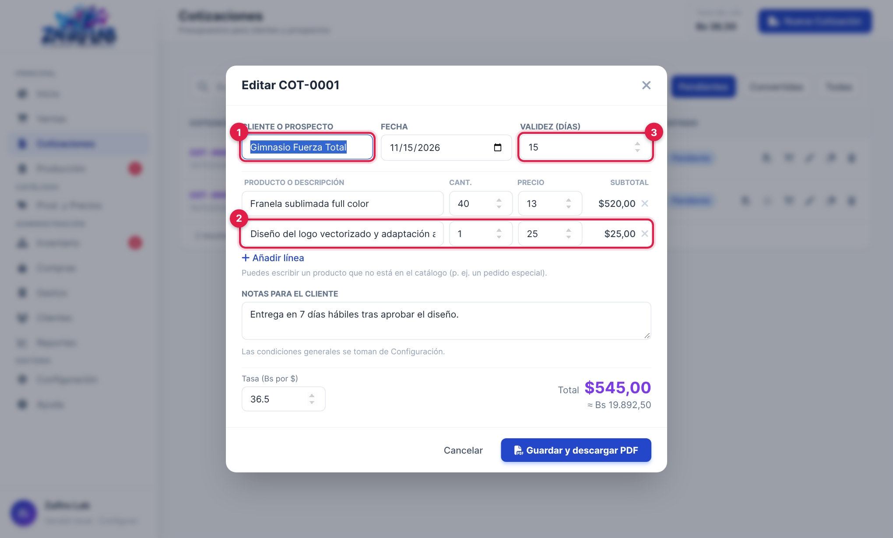
- 1Cliente registrado o nombre libre de un prospecto.
- 2Una línea escrita a mano (no está en el catálogo).
- 3Días de validez: la fecha de vencimiento se calcula sola.
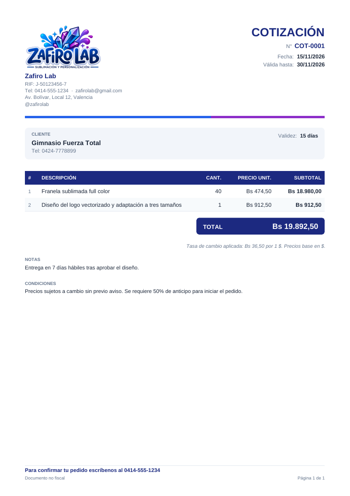
Convertir en venta
- Presiona 🛒 en la cotización aceptada.
- Se abre una venta nueva con el cliente, los productos y los precios cotizados.
- Si había líneas escritas a mano, elige el producto del catálogo que corresponde (hace falta para descontar inventario) o quítalas.
- Agrega fecha de entrega y abono, y presiona Registrar venta.
Si el cliente era un prospecto, al registrar la venta se crea como cliente automáticamente.
14Producción
Menú . Un tablero con una columna por etapa. Cada tarjeta es un pedido; las más urgentes aparecen arriba.
| Columna | Significa |
|---|---|
| 1. Por Diseñar | Pedido nuevo: hay que preparar el diseño. |
| En proceso de impresión y planchado. | |
| 3. Listo | Terminado, esperando que el cliente lo retire. ¡Avísale! |
| 4. Entregado | El cliente ya lo tiene. Aquí se ven los entregados de los últimos 30 días. |
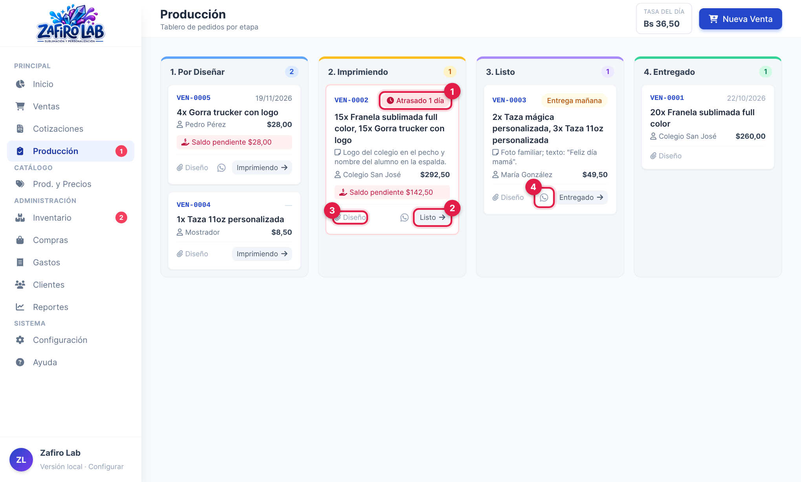
- 1Alerta de entrega: en rojo los atrasados, en ámbar los que se entregan hoy o mañana. Las tarjetas atrasadas tienen borde rojo.
- 2Botón para avanzar a la siguiente etapa (“Listo →”). También puedes arrastrar la tarjeta con el mouse a otra columna.
- 3Diseños: adjunta imágenes del diseño o enlaces de Google Drive para que el taller los tenga a mano.
- 4WhatsApp: avisa al cliente del estado de su pedido.
Si la venta tiene saldo pendiente, la tarjeta lo muestra en rojo. Al pasar a Entregado un pedido que todavía debe dinero, el programa te lo recuerda.
15Compras a proveedores
Menú . Cada vez que llega mercancía (tazas, tinta, papel…) regístrala aquí: el inventario sube y el costo de los insumos se actualiza.
- Presiona Nueva Compra.
- Escribe el proveedor (los anteriores aparecen como sugerencia) y la fecha.
- Por cada insumo de la factura: búscalo, escribe la cantidad y el costo unitario que pagaste (viene propuesto el costo actual; cámbialo por el de la factura).
- Revisa el total y presiona Registrar compra.
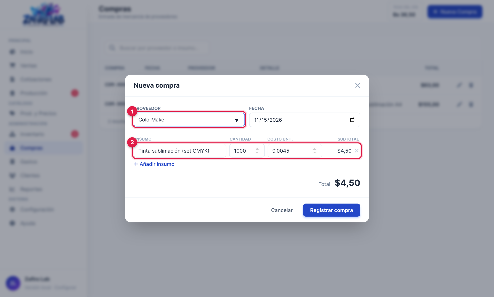
- 1Proveedor.
- 2Insumos comprados: cantidad y costo por unidad (en $).
¿Te equivocaste? Con ✏️ puedes corregir la compra y con 🗑️ anularla: el inventario y el costo se ajustan automáticamente.
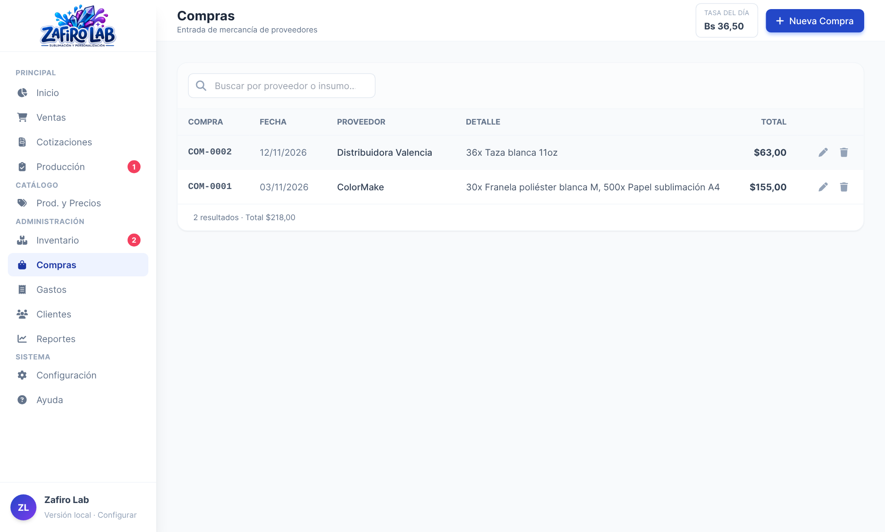
16Gastos del negocio
Menú . Todo lo que el negocio paga y no es material para fabricar: alquiler, electricidad, internet, sueldos, transporte, publicidad, mantenimiento…
- Presiona Nuevo Gasto.
- Escribe la fecha, el monto en $, la categoría (elige de la lista o escribe una nueva) y una descripción opcional.
- Presiona Guardar.
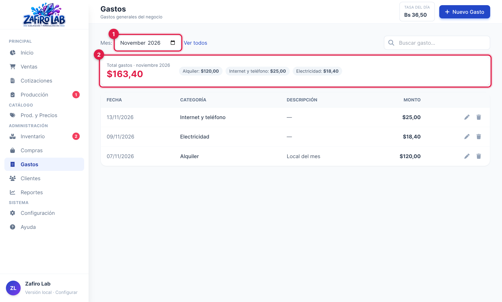
- 1Elige el mes que quieres ver (o “Ver todos”).
- 2Total del mes y cuánto se fue en cada categoría.
17Reportes y Excel
Menú . Responde la pregunta más importante: ¿cuánto está ganando el negocio?
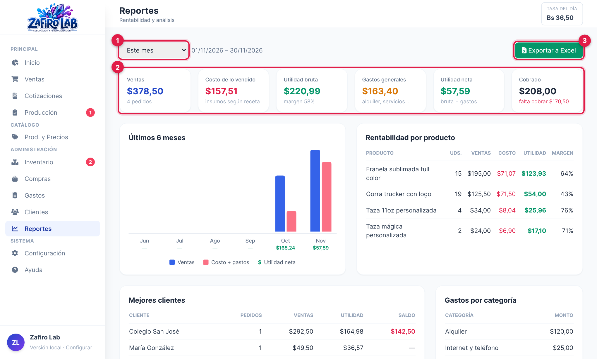
- 1Período: este mes, mes anterior, últimos 3 meses, este año o un rango de fechas a tu elección.
- 2Indicadores (explicados en la tabla de abajo).
- 3Exportar a Excel: descarga toda la información del período en un archivo de Excel.
| Indicador | Qué significa |
|---|---|
| Ventas | Todo lo vendido en el período (cobrado o no). |
| Costo de lo vendido | Lo que costaron los materiales de esos productos, según sus recetas. |
| Utilidad bruta | Ventas − costo de lo vendido. Lo que dejan los productos antes de pagar los gastos. El margen es el porcentaje que representa. |
| Gastos generales | Lo registrado en la sección Gastos. |
| Utilidad neta | Utilidad bruta − gastos. Lo que realmente ganó el negocio. Si es roja, el negocio perdió dinero en ese período. |
| Cobrado | Dinero que entró por abonos en el período, y cuánto falta por cobrar. |
Debajo encontrarás: el gráfico de los últimos 6 meses (ventas contra costos y gastos), la rentabilidad por producto (cuáles dejan más ganancia), los mejores clientes, los gastos por categoría y los cobros por método de pago.
El archivo de Excel
Contiene una hoja por tema, cada una como tabla de Excel con filtros: Resumen, Ventas (una fila por producto vendido, con costo, utilidad, margen y monto en Bs), Por producto, Cobros (con moneda y tasa), Por cobrar, Compras, Gastos, Inventario y Kárdex. Puedes ordenarlas, filtrarlas o hacer tablas dinámicas.
18La pantalla de Inicio
Es lo primero que ves al abrir el programa: un resumen de lo que necesita atención hoy.
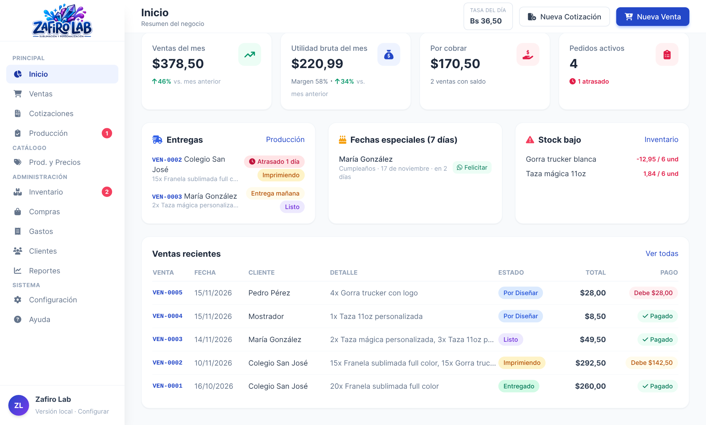
- Ventas y utilidad del mes, comparadas con el mes anterior (flecha verde si subió, roja si bajó).
- Por cobrar: cuánto le deben los clientes en total. Haz clic para ver esas ventas.
- Pedidos activos y cuántos están atrasados.
- Entregas atrasadas y de los próximos 3 días.
- Fechas especiales de clientes de los próximos 7 días, con botón para felicitarlos por WhatsApp.
- Stock bajo: insumos que hay que comprar.
- Ventas recientes con su estado y pago.
- Un aviso amarillo si hace más de 7 días que no descargas un respaldo.
19Respaldos y seguridad
Toda la información vive en la PC, en la carpeta SubliApp_datos (junto al programa). Si la PC se daña o se la roban, solo un respaldo guardado fuera de la PC te salva.
Respaldos automáticos
Cada día, al abrir el programa, SubliApp guarda una copia en SubliApp_datos\respaldos y conserva las de los últimos 30 días. Son útiles si alguien borra algo por error, pero no protegen contra fallas de la PC.
Descargar un respaldo (hazlo cada semana)
- Ve a y presiona Descargar respaldo (o el botón del aviso amarillo en Inicio).
- Se guarda en Descargas un archivo como SubliApp_respaldo_2026-11-15.db.
- Cópialo a un pendrive o súbelo a Google Drive.
Restaurar un respaldo
- Cierra SubliApp (cierra la ventana negra).
- Copia el archivo de respaldo dentro de la carpeta SubliApp_datos.
- Cambia su nombre a subliapp.db, reemplazando el que hay.
- Abre SubliApp de nuevo.
Pasar SubliApp a otra computadora
Copia la carpeta completa del programa (con SubliApp_datos adentro) a la nueva PC y crea el acceso directo de SubliApp.exe. Todo seguirá igual.
Instalar una versión nueva del programa
Reemplaza todos los archivos de la carpeta del programa excepto la carpeta SubliApp_datos. Al abrir la nueva versión, tus datos se actualizan solos (antes se guarda una copia por seguridad).
Empezar de cero
Para borrar todos los datos (por ejemplo después de practicar), haz doble clic en Borrar datos.bat y escribe BORRAR. Antes de borrar se guarda una copia en la carpeta de respaldos. La configuración del negocio se conserva.
20Rutina diaria y semanal
☀️ Cada día
- Abrir SubliApp y actualizar la tasa del día.
- Revisar : entregas, atrasos, cumpleaños y stock bajo.
- Registrar cada pedido confirmado en , con su abono.
- Mover los pedidos en a medida que avanzan y avisar al cliente cuando estén Listos.
- Registrar cada pago recibido como abono.
📅 Cada semana
- Descargar el respaldo y guardarlo en pendrive o Drive.
- Revisar en el filtro “Con saldo” y cobrar lo pendiente.
- Registrar las compras de la semana y los gastos.
- Contar lo más importante del inventario y registrar mermas o ajustes si no coincide.
🗓️ Cada mes
- Revisar : utilidad neta y productos más rentables.
- Revisar en los productos por debajo del margen y ajustar precios.
- Exportar el Excel del mes para el archivo del negocio.
21Preguntas frecuentes
La pantalla dice “No se pudo cargar la información”.
Seguramente se cerró la ventana negra. Ábrela de nuevo con doble clic en SubliApp y presiona Reintentar.
Hice doble clic en SubliApp y no pasó nada.
Si el programa ya estaba abierto, solo se abre otra pestaña del navegador. Busca la ventana negra en la barra de tareas o revisa las pestañas del navegador.
Me equivoqué en una venta.
Ábrela con ✏️ en Ventas y corrígela. El inventario se ajusta solo. Si fue un abono equivocado, elimínalo con la ✕ en la ventana de abonos y regístralo de nuevo.
El stock de un insumo está en negativo.
Significa que se vendió más de lo que había registrado. Registra la compra que falta o, si contaste físicamente, haz un Ajuste (+) en el kárdex.
¿Por qué no puedo eliminar un insumo o un cliente?
Para proteger la información: un insumo usado en recetas o un cliente con ventas no se puede borrar. El mensaje te dice qué hacer.
Cambió la tasa: ¿se modifican las ventas anteriores?
No. Cada venta y cotización guarda la tasa con la que se hizo. Al generar el PDF puedes elegir usar esa tasa o la del día.
El cliente pagó una parte en dólares y otra en bolívares.
Registra dos abonos: uno en $ y otro en Bs. El saldo se calcula solo.
¿Puedo usar SubliApp desde el celular u otra computadora?
Esta versión funciona en una sola PC. Para usarla en otra, hay que copiar la carpeta completa (capítulo 19).
El recibo, ¿sirve como factura?
No. Es un documento no fiscal (comprobante de pago). La factura fiscal debe emitirse con imprenta o máquina fiscal autorizada.
Las fechas en los campos aparecen como mm/dd/aaaa.
El formato de los campos de fecha depende del idioma del navegador. Si quieres verlas como dd/mm/aaaa, configura el navegador en español (Venezuela). En las listas y documentos SubliApp siempre muestra dd/mm/aaaa.
22Glosario
- Abono
- Cada pago que hace un cliente de una venta (anticipo o pagos posteriores).
- Consumible
- Insumo que se gasta en el proceso: tinta, papel, cinta térmica.
- Costo de producción
- Lo que cuesta fabricar una unidad de un producto, según su receta.
- Costo promedio
- Costo de un insumo que mezcla lo que costaba antes y lo que costó la última compra.
- Folio
- Número de cada documento: VEN-0001 (ventas), COT-0001 (cotizaciones), COM-0001 (compras). No se repiten nunca.
- Insumo
- Material con el que se fabrican los productos.
- Kárdex
- Historial de entradas y salidas de un insumo.
- Margen
- Porcentaje del precio de venta que es ganancia. Margen 50% = la mitad del precio es ganancia.
- Margen objetivo
- El margen que quieres lograr; se usa para sugerir precios.
- Merma
- Material que se pierde o se daña. En la receta, el % de desperdicio normal del proceso.
- Mostrador
- Venta rápida sin registrar los datos del cliente.
- Receta
- Lista de insumos y cantidades que lleva una unidad de un producto.
- Saldo
- Lo que falta por cobrar de una venta.
- Stock
- Cantidad disponible de un insumo.
- Stock mínimo
- Cantidad a partir de la cual el programa avisa que hay que comprar.
- Sustrato
- Objeto que se personaliza: taza, franela, gorra, mouse pad.
- Tasa del día
- Cuántos bolívares vale un dólar; la cargas tú cada día.
- Utilidad bruta / neta
- Bruta: ventas − costo de materiales. Neta: bruta − gastos del negocio.
SubliApp · Sistema de gestión de Zafiro Lab